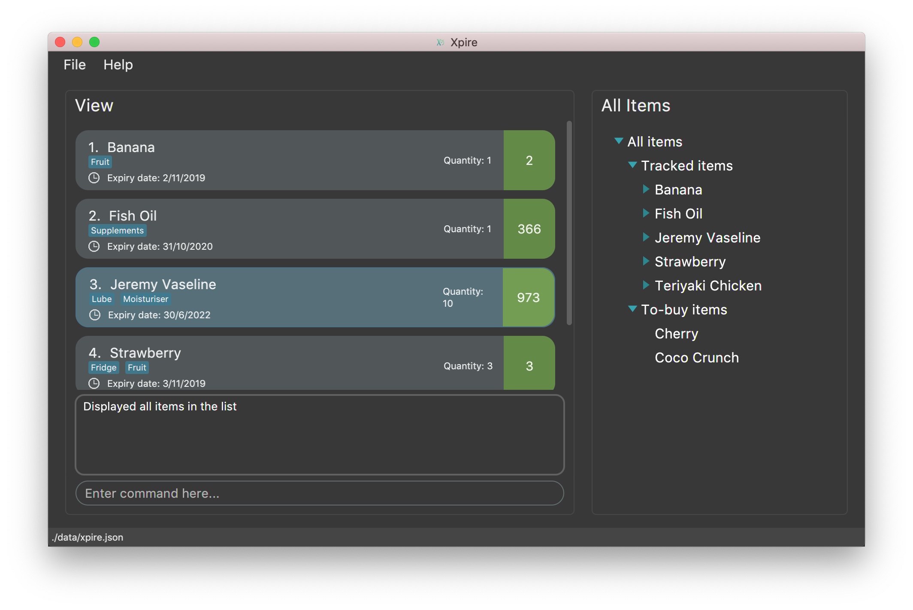

By: TeamXpire Since: Sep 2019 Licence: MIT
- 1. Introduction
- 2. Quick Start
- 3. Features
- 3.1. Common features
- 3.2. Main list features only
- 4. FAQ
- 5. Command Summary
1. Introduction
Xpire is for those who prefer to use a desktop app for tracking expiry dates of items. More importantly, Xpire is optimised for those who prefer to work with a Command Line Interface (CLI) while still having the benefits of a Graphical User Interface (GUI). If you have trouble tracking your items' expiry dates, Xpire can help you manage and notify you of items that are soon-expiring. Interested? Jump to the Section 2, “Quick Start” to get started!
2. Quick Start
-
Ensure you have Java
11or above installed in your Computer. -
Download the latest
xpire.jarhere. -
Copy the file to the folder you want to use as the home folder for Xpire.
-
Launch the jar file using the
java -jarcommand to start the app. The GUI should appear in a few seconds. -
Type the command in the command box and press Enter to execute it.
e.g. typinghelpand pressing Enter will open the help window. -
Some example commands you can try:
-
view|main: views all items in the main list -
check|20: views items that are going to expire within 20 days -
add|Banana|25/9/2019: adds an item namedBananawith expiry date25/9/2019to list -
delete|3: deletes the 3rd item shown in the current list -
exit: exits the app
-
-
Refer to Section 3, “Features” for details of each command.
3. Features
Command Format
-
Words that are enclosed with
<and>are the parameters to be supplied by the user e.g. inset reminder|<index>|<reminder threshold>,<index>and<reminder threshold>are parameters which can be used asset reminder|1|7. -
Parameters in square brackets are optional e.g
check[|<days>]can be used ascheck|7orcheck. -
Optional parameters with
… after them can be used multiple times including zero times e.g.tag|<index>|[<tag>]…can be used astag|1|#Fruit #Frozen #Cold,tag|1, ortag|1|#Fruit. -
Trailing
|(s) are allowed. e.g.add|banana|2/2/2020|||orsort|name|.
3.1. Common features
3.1.1. Opening the help window: help
Displays the help window.
Format: help
3.1.2. Viewing all items : view
3.1.2.1. Viewing all items in the current list
Shows all items in the current list, which is the main list by default, or the replenish list if otherwise specified.
All items are sorted by both name (lexicographical order) and date (chronological order).
Format: view
3.1.2.2. Viewing all items in another list
Changes the list to be displayed.
You can toggle between the main list and the list of items to be replenished with this command.
Format: view|<list to view>
Examples:
-
view|main
Displays all items in the main list. -
view|replenish
Displays all items in the replenish list.
3.1.3. Searching for item(s) by their name and/or tag: search
Searches for items whose names or tag(s) contain any of the given keywords.
Format: search|<keyword>[|<other keywords>]…
Examples:
-
search|kebab
ReturnsChicken Kebabandkebab -
search|Chicken Ham
ReturnsChicken Ham -
search|milk|tea|#Drink
Returns any items with names containingmilkortea, or with the tag#Drink.
3.1.5. Clearing all entries : clear
Clears all entries from the current list that is displayed.
Format: clear
3.1.6. Exiting the program : exit
Exits the program.
Format: exit
3.1.7. Saving the data
Items are saved in the hard disk automatically after any command that modifies the list.
There is no need to save manually.
3.2. Main list features only
3.2.1. Adding an item: add
Adds an item to your tracker.
Upon addition of the item, the updated list sorted by name then date in chronological order, will be displayed.
Format: add|<item name>|<expiry date>[|<quantity>]
Examples:
-
add|durian|30/9/2020(without quantity)
Adds the itemdurianwith expiry date30/9/2019with quantity1 -
add|ice cream|18/8/2020|2
Adds the itemice creamwith expiry date18/8/2019with quantity2
| For items with single quantity, you can save time by keying in only the item name and expiry date. |
3.2.2. Deleting variable(s): delete
3.2.2.1. Deleting an item
Deletes the specified item from your list.
Format: delete|<index>
Examples:
-
view|main
delete|2
Deletes the 2nd item in the main list. -
sort|name
delete|3
Deletes the 3rd item in the sorted main list. -
search|potato
delete|1
Deletes the 1st item in the results of thesearchcommand.
3.2.2.2. Deleting certain tags from an item
Deletes tag(s) from the specified item.
Format: delete|<index>|<tag>[<other tags>]…
Examples:
-
view|main
delete|3|#Fruit #Food
Deletes the tags#Fruitand#Foodfrom the 3rd item in the main list.
3.2.2.3. Reducing the quantity of an item
Reduces item quantity by the specified quantity.
Format delete|<index>|<quantity>
Examples:
-
view|main
delete|4|1
Reduces the quantity of the 4th item by 1.
3.2.3. Tagging an item : tag
3.2.3.1. Display all tags created
Shows all the tags you have created.
Format: tag
3.2.3.2. Add new tag(s) to an item
| An item can have any number of tags (including 0) |
Tags an item from the list according to user input
Format: tag|<index>|<tag>[<other tags>]…
Examples:
-
view|main
tag|2|#Nestle #Caffeine
Tags the 2nd item in the main list with#Nestleand#Caffeine.
3.2.4. Setting reminder for an item: set reminder
3.2.4.1. Setting the number of days before an item’s expiry date to start reminding you
Sets a reminder threshold for your item.
Format: set reminder|<index>|<reminder threshold>
This allows the check command to quickly find the item once the reminder threshold is exceeded.
Examples:
-
set reminder|2|4
Sets a reminder for the second item in the list 4 days before its expiry date.
3.2.4.2. Removing the reminder for an item
Removes the reminder set for your item.
Format: set reminder|<index>|0
Examples:
-
set reminder|1|0
Removes the reminder for the first item in the list.
3.2.5. Listing expiring items: check
3.2.5.1. Listing all expiring items with activated reminders
Lists items whose reminder has been activated.
Format: check
3.2.5.2. Listing items that will expire within a certain number of days
Lists items that will expire within the specified number of days in your tracker.
Format: check|<days>
check|0 lists items that have already expired or expire on the day of checking.
|
Examples:
-
check|20
Lists items expiring in the next 20 days.
3.2.6. Sorting all items : sort
Sorts all items in your list by their name or date.
Format: sort|<key>
3.2.6.1. Sorting all items by their name
Format: sort|name
3.2.6.2. Sorting all items by their date
Format: sort|date
4. FAQ
Q: How do I transfer my data to another Computer?
A: Install the app in the other computer and overwrite the empty data file it creates with the file that contains the data of your previous Xpire folder.
5. Command Summary
5.1. Table Summary
The table below summarises the common commands available for use in both lists.
| Command | Format | Example |
|---|---|---|
Help |
|
|
View |
|
|
|
||
Search |
|
|
|
||
|
||
Shift |
|
|
|
|
|
Clear |
|
|
Exit |
|
The table below summarises the commands only available for use in the main list.
| Command | Format | Example |
|---|---|---|
Add |
|
|
|
|
|
Delete |
|
|
|
|
|
|
|
|
Tag |
|
|
|
|
|
Set reminder |
|
|
Check |
|
|
|
|
|
Sort |
|
|
|
5.2. List Summary
The commands listed below are common to both lists.
-
Help :
help -
View :
view|<list> -
Search :
search|<keyword>[|<other keywords>]…
e.g.search|milk|tea|pearls -
Clear :
clear -
Exit :
exit
The commands listed below can only be used in the main list.
-
Add
add|<item name>|<expiry date>[|<quantity>]…
e.g.add|durian|30/9/2019 -
Delete :
delete|<index>[|<tag> or <quantity>]
e.g.delete|3 -
Tag :
tag|<index>|[<tag>]… -
Set reminder :
set reminder|<index>|<reminder threshold>
e.g.set reminder|1|7 -
Check :
check[|<days>]
e.g.check|20 -
Sort :
sort|<key>
e.g.sort|date